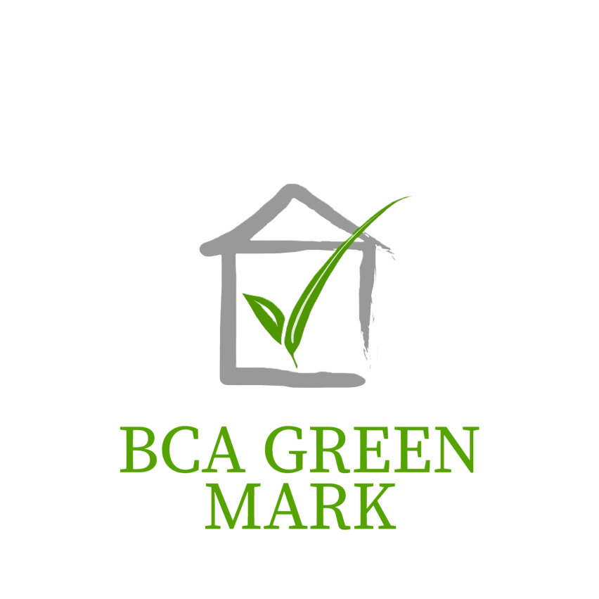
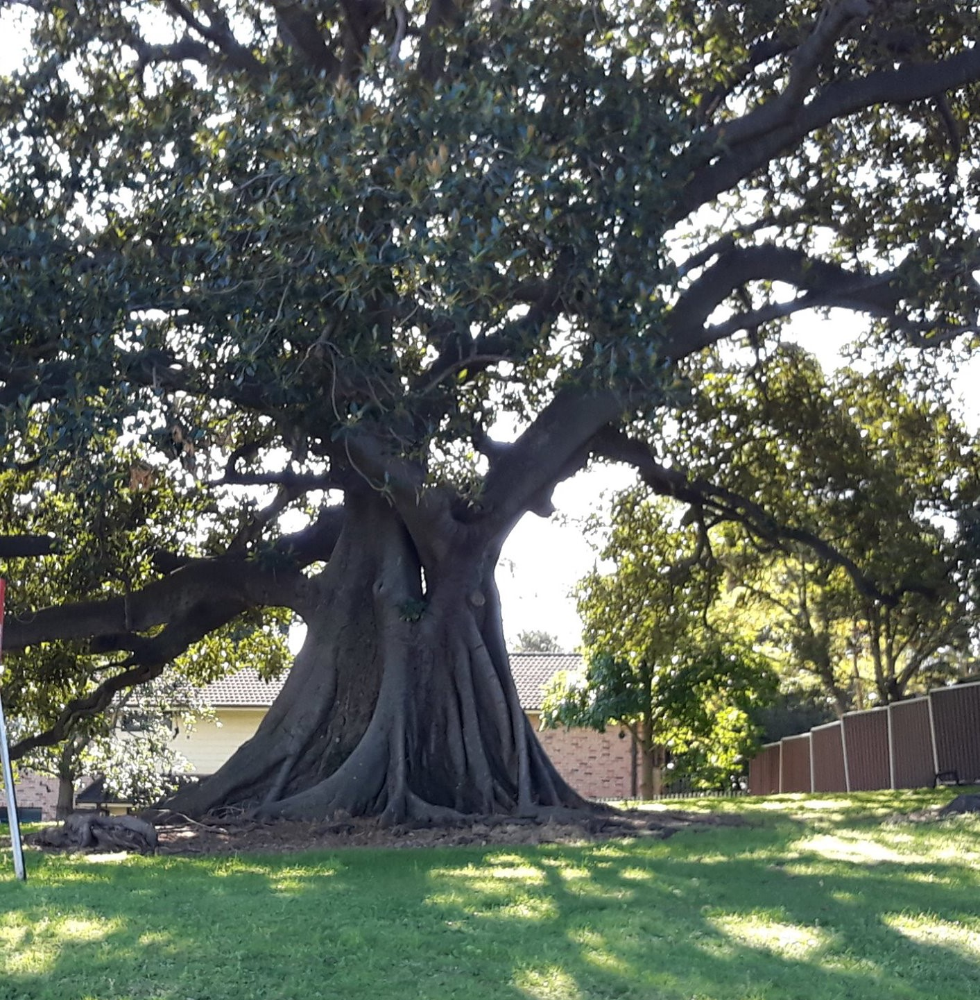

SP's Contributions
These are just a few initiatives SP has undertaken in term of environmental sustainability.
Diplomas featuring Common Core Curriculum (CCC)
The CCC prepares our students for the green economy by exposing them
to inter-disciplinary learning experiences and global issues, framed
by the SG Green Plan and the United Nations' Sustainable Development Goals,
where they will learn to develop prototype sustainability solutions for real-life issues.

Green Mark Platinum Buildings
The Green Mark Certification Scheme is a green building rating system that assesses a
building's environmental performance and impact.T18A, T18B, T3B and the SP Sports Arena
have been certified Green Mark Platinum with on-going efforts to certify all 22 buildings
in SP by 2025.

Species of Flora
Taking a stroll along one of SP's many footpaths, you would find yourself
immersed in greenery and nature—promoting relaxation, reducing stress and
anxiety, and providing an instant mood boost.SP's lush campus is home to an
incredible biodiversity of plants including our majestic Brown Woolly Fig
Heritage Trees found near Food Court 1.
